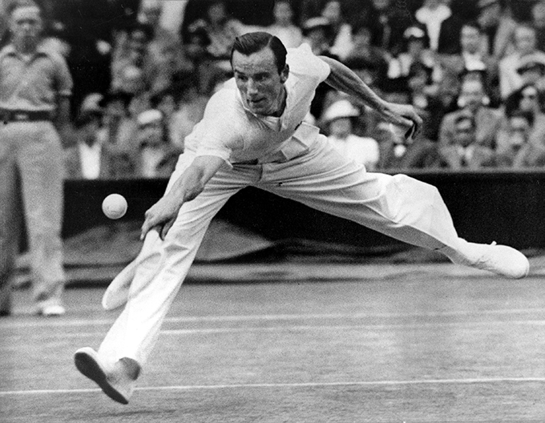

História

Wimbledon é o torneio de tênis mais antigo e um dos mais prestigiados do mundo.
Ele faz parte dos quatro Grand Slams, junto com o Aberto da Austrália, Roland
Garros e o Aberto dos Estados Unidos. Realizado desde 1877 no All England Lawn
Tennis and Croquet Club, em Londres, Wimbledon é conhecido por suas tradições
únicas, incluindo o uso obrigatório de roupas brancas pelos jogadores e o consumo
de morangos com creme pelos espectadores.
Com o passar dos anos, Wimbledon se expandiu:
- 1884: Foram adicionados eventos de simples feminino e duplas masculinas. Maud Watson foi a primeira campeã no evento feminino.
- 1913: O torneio incluiu as competições de duplas femininas e duplas mistas.
- Era Open (1968): Wimbledon abriu suas portas para jogadores profissionais, transformando-se no palco principal para os melhores tenistas do mundo.
Wimbledon atrai milhões de espectadores ao redor do mundo, tanto presencialmente quanto pela televisão. Sua
audiência global, unida ao seu histórico impecável de organização, faz dele um dos eventos esportivos mais
aguardados do ano. Além disso, o torneio se adapta aos tempos modernos, como a introdução do tie-break no set
decisivo em 2019, mantendo a competitividade sem perder suas raízes tradicionais.
Tradições
Desde os primeiros torneios em 1877, Wimbledon exige que os jogadores vistam roupas totalmente brancas. A regra
foi implementada para lidar com a percepção vitoriana de que a cor branca simbolizava pureza e para evitar
manchas de suor visíveis, consideradas inadequadas na época. Essa tradição diferenciada destaca Wimbledon como um
evento de prestígio, contrastando com a liberdade de vestuário de outros torneios.
 Morangos com creme são o lanche oficial de Wimbledon e um símbolo culinário do torneio. A prática remonta ao
século XIX, quando morangos estavam em sua safra no verão britânico. Morangos com creme representam a essência
do verão britânico e a sofisticação associada a Wimbledon, sendo consumidos tanto por fãs comuns quanto pela
realeza presente no evento.
Morangos com creme são o lanche oficial de Wimbledon e um símbolo culinário do torneio. A prática remonta ao
século XIX, quando morangos estavam em sua safra no verão britânico. Morangos com creme representam a essência
do verão britânico e a sofisticação associada a Wimbledon, sendo consumidos tanto por fãs comuns quanto pela
realeza presente no evento.
 Wimbledon tem uma conexão histórico com a realeza britânica desde o início do torneio. A presença da realeza
simboliza o status de Wimbledon como um evento de classe mundial e fortalece suas raízes britânicas. A Duquesa
de Cambridge, uma entusiasta do tênis, é a patrona oficial do torneio e frequentemente entrega os troféus aos
campeões.
Wimbledon tem uma conexão histórico com a realeza britânica desde o início do torneio. A presença da realeza
simboliza o status de Wimbledon como um evento de classe mundial e fortalece suas raízes britânicas. A Duquesa
de Cambridge, uma entusiasta do tênis, é a patrona oficial do torneio e frequentemente entrega os troféus aos
campeões.
Wimbledon é o único Grand Slam jogado exclusivamente em quadras de grama. Ele é jogado na grama devido às suas
raízes históricas e à tradição que remonta aos primeiros dias do tênis. A grama era a superfície original usada
no esporte e, desde o início, Wimbledon escolheu manter essa tradição, tornando-se o único dos quatro Grand Slams
a ser disputado em quadras de grama.
Maiores Campeões
| Jogador | Titulos | Ano da Conquista |
|---|---|---|
 R. Federer
R. Federer
|
8 | 2003, 2004, 2005, 2006, 2007, 2009, 2012, 2017 |
| W. Renshaw | 7 | 1881, 1882, 1883, 1884, 1885, 1886, 1889 |
| P. Sampras | 7 | 1993, 1994, 1995, 1997, 1998, 1999, 2000 |
| N. Djokovic | 7 | 2011, 2014, 2015, 2018, 2019, 2021, 2022 |
| Björn Borg | 5 | 1976, 1977, 1978, 1979, 1980 |